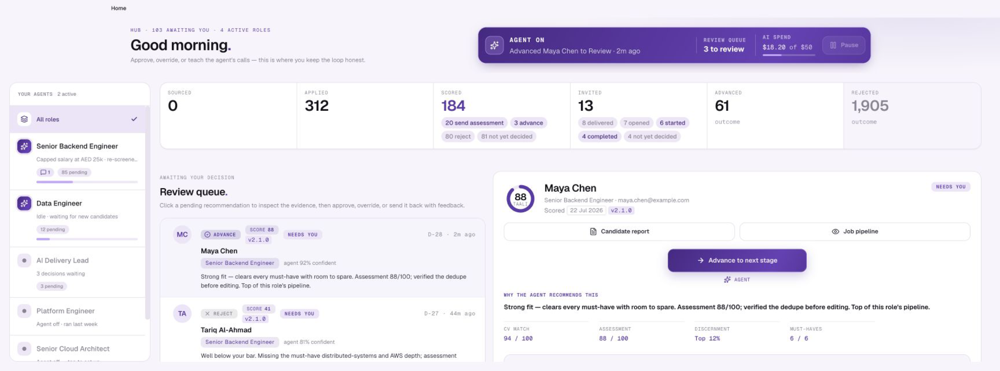
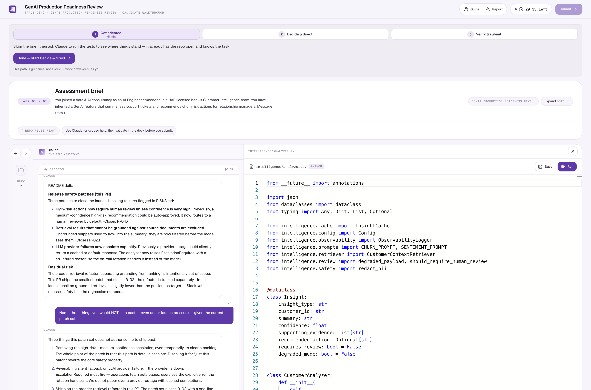
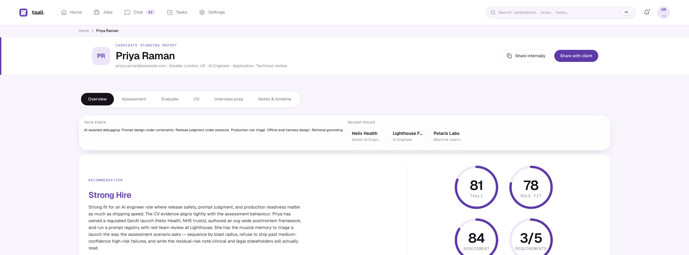

AI-tailored applications can be produced at scale. Strong candidates disappear inside manual triage, duplicated records, and inconsistent screening.
CVs are claims. Legacy tests ban or ignore AI, so they cannot show who can direct it, challenge it, verify it, and still deliver excellent work.
One agent per role processes applicants, removes duplicates, checks must-haves, scores and ranks, sends assessments, and brings the best people back for interview.
Candidates complete role-specific coding or knowledge work with AI. Taali captures the full work trace — prompts, tool calls, edits, tests, Git history — and turns it into an evidence-linked report.



Our design partner is an international data and AI consultancy delivering data engineering, AI, cloud, product, and governance work. Its hiring operation is Taali's live proving ground. Both pilots named on request.
Connect an ATS or launch directly in Taali. The agent runs the funnel and the assessment shows how the strongest candidates actually work.
Add roles, recruiters, and candidate pools; reuse policies and task templates; extend into product, operations, and other knowledge work.
Become the standard for measuring AI-at-work, distributed through ATS integrations, recruitment partners, and APIs.
The agent runs the work. The recruiter gets an evidence-backed shortlist worth meeting.
The budget we displace is recruiter time and agency fees, not an ATS licence. Start with AI-intensive, regulated, repeat-hiring employers in the UAE.
Agent actions, assessments, and evidence — with per-role caps instead of seat pricing.
Designed and instrumented. Not yet validated by paid demand.A recruiter puts credits against a single hard-to-fill role and keeps a cap on it.
Policies, scoring criteria and task templates get reused across the team's roles.
Multi-team rollout, ATS connectors and API access for recruitment partners.
A data scientist who spent more than a decade hiring and growing data teams, then built Taali from the ground up.
Bootstrapped · no investors
Founder-funded
Bootstrapped to date. We take Hub71's SAFE and price a round only when the motion is proven.
Win UAE employers and recruitment partners, then convert pilots into recurring customer revenue.
Deploy, integrate and tune Taali inside each customer’s live hiring workflow.
Entity established. Founder on the ground.
Applied-AI evidence across coding and knowledge work.
Prove a repeatable, customer-funded growth model.